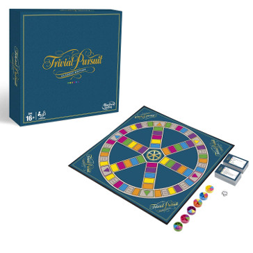

Party&Co
Reúne a tus amigos para jugar al juego de preguntas y respuestas con el que comenzó todo.
La Edición Clásica de este juego de Trivial Pursuit es el mismo juego que conoces y que te encanta, pero con un diseño retro de los años 80.
Este juego de Trivial Pursuit incluye el juego y el tablero clásicos y contiene 2.400 preguntas en seis categorías: geografía, entretenimiento, historia, arte y literatura, ciencias y naturaleza, y deportes y pasatiempos.